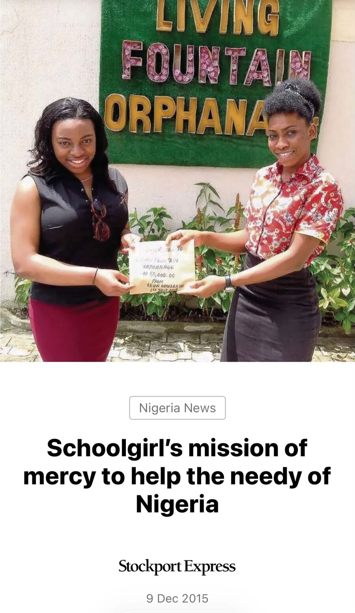

Age 16 · Manchester to Lagos
A cake sale for an orphanage
Seun organised a cake sale at her local church and raised more than double her target to support an orphanage in Lagos.
Read moreBritish-Nigerian · Manchester
Award-winning young leader. Changemaker. International speaker.
Championing youth empowerment, gender equality and social impact, with a particular interest in Africa’s development and the role of diaspora engagement in driving positive change locally and globally.
About Seun
A British-Nigerian young leader who uses her platform for youth empowerment, gender equality and lasting social impact, in Manchester and in Nigeria.
Impact
From a Manchester half marathon to beach clean-ups in Lagos, Seun turns her networks into practical support.
 Manchester Half Marathon · 12 Oct 2025
Manchester Half Marathon · 12 Oct 2025The funds backed the Men As Allies programme, which equips around 50 men and boys in local communities to challenge harmful norms and help end violence against women and girls.

Seun organised a cake sale at her local church and raised more than double her target to support an orphanage in Lagos.
Read more
She helped collect plastic that coastal communities, especially women and youth, recycle into income.
Read moreShe listened to inmates’ stories and handed out food and toiletries in a facility holding around 3,000 people built for 800.
Read moreThrough my work, I have seen how listening to people and placing their voices at the heart of decision-making can lead to better outcomes for communities.Seun Odusanya · Black History Month spotlight, GM Black Tech Expo
Associated organisations
Speaking invitations, collaborations and press enquiries are all welcome.